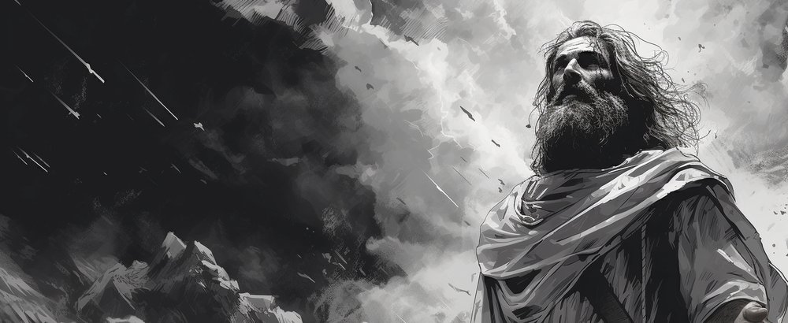
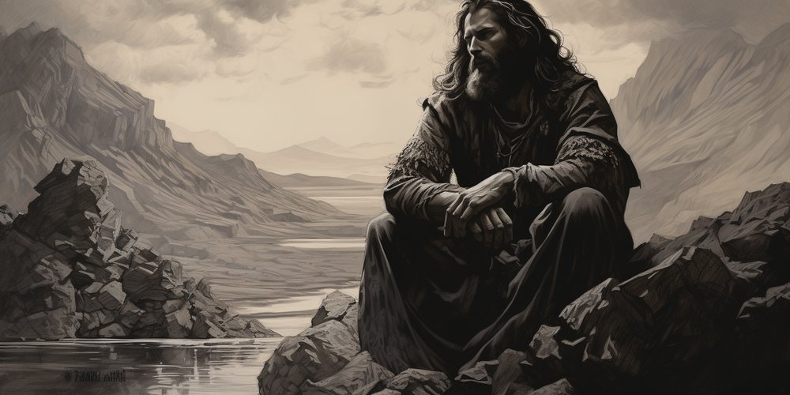
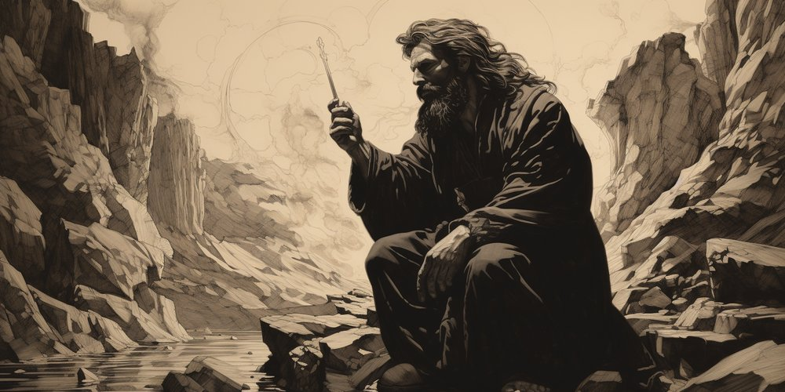
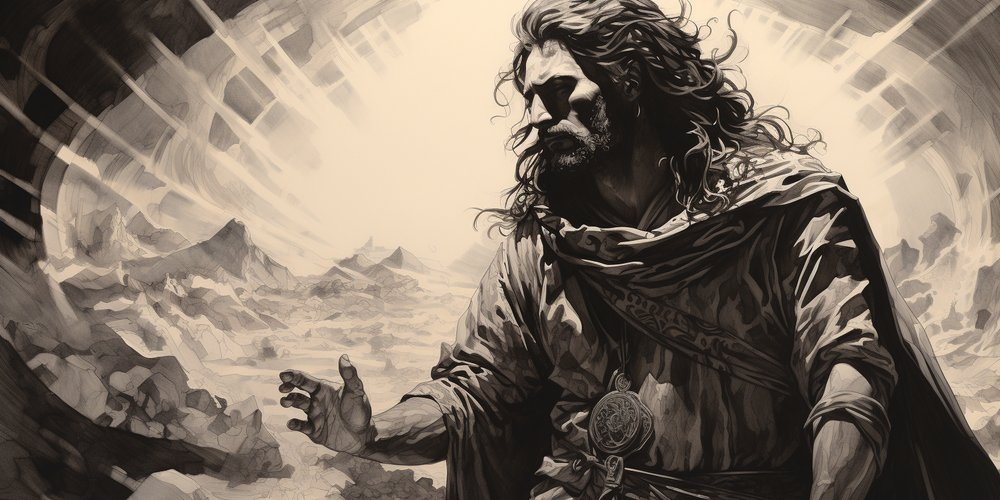

Ephraim Kalish: Books on Creativity in the Bible
The book series "An Artist from God" by Ephraim Kalish
"THE MUSICIAN. Yuval, Son of Lemekh": the PDF and MP3 versions of the book.
***
For the last thirty years I have devoted myself to studying the figure of Bezalel and the theme of creativity in the Bible. In 2009 I released the film "Bezalel, Son of Light" (watch; author Ephraim Kalish, composer Daniel Kruglov), in 2013 the film "The Voice of the Shofar", and I have made many other videos and articles about the creative person in Scripture (the videos are on the Torah-Art YouTube channel, the articles on toraart.com). Now the time has come to put what I have gathered in order.
My study of biblical names and words was shaped by contact with Jewish tradition and with the language in which the Tanakh is written. (Tanakh is an acronym of TORAH, NEVI'IM, KETUVIM: the Five Books of Moshe, the Prophets, the Writings. This is what Jews call the books of the part of the Bible known in Christianity as the Old Testament.) The fact that I am an Israeli has also played its part.
The book "THE MUSICIAN. Yuval, Son of Lemekh" is the first in the series "An Artist from God". I would like to briefly present all five books of the series: "THE MUSICIAN. Yuval, Son of Lemekh", "The Law and the Artist. A Formula of Creativity", "Bezalel, Son of Light", "Bezalel. The School of Ascent" and "David, the Lord's Personal Musician".
***
"THE MUSICIAN. Yuval, Son of Lemekh"

A good friend of mine, an Israeli composer, believes that studying the Bible through music is the most effective way to convey revelation, since music makes it possible to keep all the deep meanings that words are sometimes unable to reflect.
The ancients saw in music a way to convey a revelation of the transcendent that cannot be put into words.
The hero of my book, the musician Yuval, is an ancient figure, the eighth generation from Adam. He received a revelation about the role of music in communion with the Creator and in man's knowledge of himself. Yuval shared his revelation with mankind, and so the Bible called him the teacher of all musicians.
If we understand the meaning of the instruments that the first musician in history played, and add the interpretation of our hero's name and of the names of his brothers and parents, an eternal wisdom opens up that can inspire every artist today.
***
"The Law. A Formula of Creativity"

The book explores the relationship between faith and creativity. Drawing inspiration from the Ten Commandments, especially the first five, which are devoted to God's relationship with man, I show the fundamental principles that underlie creative work.
Contrary to a widespread opinion, the commandments are meant not to limit a person's freedom but to unfold a person's potential and to further the true building up of the person. The essence of creativity can be presented as a formula made of four key Hebrew words of the second commandment. These words are: graven image, service, worship, God. Without any one of these concepts the creative process will not take place.
There is a deep connection between art, faith and the human spirit. The book "A Formula of Creativity" aims to unlock creative potential and to give a deeper understanding of the creative calling.
***
"Bezalel, Son of Light"

Bezalel is the artist whom the Creator chose to build a sanctuary for the God of Israel (Exod. 31:2).
The main idea of the book is an interpretation of the great master's Hebrew name. His name contains an encoded message to the artist of today who seeks to fulfil his creative calling.
This book encourages artists to reflect on the creative path and on the spiritual meaning of their undertakings.
***
"Bezalel. The School of Ascent"

This is the story of the spiritual path of Bezalel, the artist called by God after Israel's deliverance from slavery in Egypt. In the Sinai wilderness the Creator charged him with making a portable temple, the Tabernacle, for God.
The book presents Bezalel's legacy as an artist-teacher who founded a school of creativity, a school of ascent, to pass on knowledge and spiritual wisdom to his pupils. Among his distinguished followers were King David and his son King Shlomo.
The school of ascent is a metaphorical ladder, each step of which brings the pupil closer to the Creator.
***
"David, the Lord's Personal Musician"

David is a world-famous artist, the record-holder for the number of mentions in the Bible. In this he is second only to his great descendant, Yeshua of Natzrat (Nazareth).
King David was a great musician and shepherd, poet, warrior and politician. In everything he acted as an artist. He had the courage to make mistakes, to go through deep repentance and to begin again. In his songs to the Creator he opened himself completely and turned his poetic searching into deep spiritual revelations.
The eternal legacy of David the artist is a source of inspiration for all who seek to create while drawing near to God. His experience will help the artist of today to grasp the influence of creative work driven by a higher purpose.
 The Musician. Yuval, Son of Lemekh: the Audiobook
The Musician. Yuval, Son of Lemekh: the Audiobook